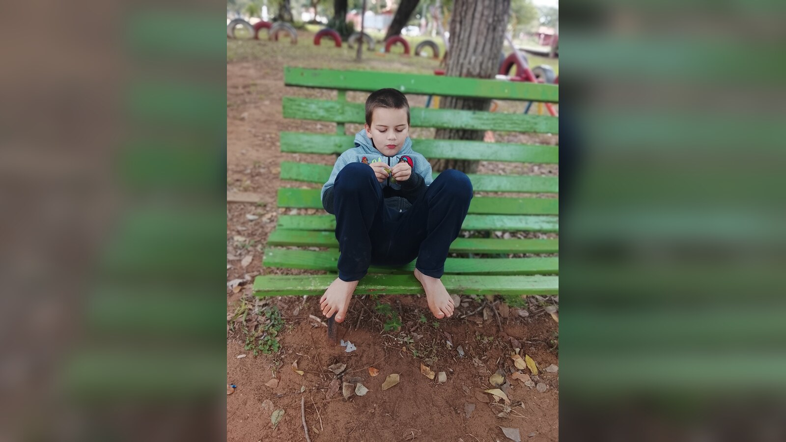

Why the End of School Services Can Feel Like Falling Off a Cliff
Graduation can remove transportation, staffing, routine, therapies, and community access all at once—while the disability remains.

Why do families describe the end of special education as falling off a cliff?
Because school is rarely only instruction. For a student with significant disabilities, it may also provide transportation, trained staff, therapies, communication support, personal care, meals, structured activity, peer contact, safety planning, and a dependable place to go five days a week.
Then eligibility ends. The young adult remains the same person, but the coordinated structure around them can shrink into waiting lists, separate applications, limited hours, and family members trying to rebuild the week piece by piece.
The cliff is not caused by adulthood. It is caused by continuity ending before a replacement exists.
School is an entitlement; many adult services are not
Under U.S. special-education law, eligible students receive a free appropriate public education through a public system. Adult disability services operate under different laws, programs, eligibility rules, budgets, and provider capacity. Being eligible may not mean a service is immediately available, and receiving one service does not create a complete day.
The Department of Education’s transition guidance stresses coordination among schools, vocational rehabilitation, students, and families. That coordination matters precisely because there is no automatic handoff into one adult system that replaces school.
The details vary by country and region. Paraguay does not mirror the United States. Yet families in many places confront the same structural problem: childhood services are organized around school, while adult life is fragmented across health, social, employment, family, and community systems.
The loss is larger than program hours
When school ends, a person may lose familiar adults who know subtle signs of pain, overload, refusal, or enjoyment. Friends and classmates scatter. A practiced route disappears. Therapies may move from the school day into appointments the family must arrange and fund. Parents may lose the hours that made paid work or basic rest possible.
A program offering several hours twice a week may be worthwhile, but it does not replace a full school week. Families still have to solve transportation, supervision, personal care, meals, communication, evenings, medical appointments, and every uncovered hour.
This is why evaluating an adult day program requires more than asking whether a space is available. Families need to know what support it provides, what it does not, and what happens when staffing changes.
Quiet does not mean easy
Sam is so laid-back. On the morning walk pictured here, he sat on a bright green bench and became very still, almost meditative. He does that often. I call him an old soul.
Someone passing us might see a calm child who asks for very little. They would not see how much planning makes an ordinary walk possible, how carefully I track where he is, or how his non-speaking communication and safety needs shape our days.
That distinction will matter even more in adulthood. A quiet person can be overlooked in a busy service system. Calm behavior does not mean they can organize their own transportation, report mistreatment, schedule health care, prepare every meal, or stay safe alone. Transition planning must document the invisible support, not merely the visible crisis.
Replace functions, not labels
Families sometimes search for “the adult program” that will replace school. A more useful approach is to list every function school currently performs and plan for each one.
- Structure: What creates a predictable week?
- Transportation: Who gets the person to each place and home again?
- Communication: Who understands and maintains the person’s system?
- Health and personal care: Who handles medication, meals, toileting, mobility, and appointments?
- Relationships: Which familiar people will remain?
- Purpose and recreation: What will make the week worth living?
- Respite and backup: What protects the family when the primary caregiver cannot provide care?
Several services and informal relationships may share those functions. The goal is not to reproduce school forever. It is to prevent essential parts of life from vanishing on graduation day.
What you can do this week
Inventory what school provides
For five school days, write down every service, prompt, ride, meal, relationship, accommodation, and hour of supervision the student receives.
Call one adult agency
Ask about eligibility, documentation, waiting lists, service limits, transportation, and the earliest date an application can be filed.
Document invisible support
Record what another caregiver would need to know even on a calm day: elopement risk, communication, food, medication, hygiene, money, traffic awareness, and recovery after overload.
Protect one continuing relationship
Identify a peer, educator, relative, faith-community member, or neighbor who could remain part of adult life.
Long-term questions to consider
- Which services have waiting lists, and when can the person join them?
- How many weekly hours will actually be covered?
- Who provides transportation and backup when a program closes?
- How will communication knowledge transfer to new staff?
- Can family employment and health survive the uncovered care hours?
- What remains if a single program or caregiver becomes unavailable?
Casa de SAM’s position: continuity is part of safety
Casa de SAM’s long-term vision is not simply a building. It is continuity: stable homes, people who know residents well, reliable daily support, relationships, and a life that does not have to be reconstructed every time a program or caregiver changes.
No system can prevent every transition. But responsible planning can keep one bureaucratic cutoff from becoming a human emergency.
Sources and further reading
- U.S. Department of Education: IDEA definition of transition services
- U.S. Department of Education: Transition Guide to Postsecondary Education and Employment
- U.S. Department of Education: Coordinating Transition Services and Postsecondary Access
About Casa de SAM
Casa de SAM is a developing vision for a lifelong residential community in Paraguay for adults with autism and other developmental disabilities who need substantial daily support. The project is being designed around safety, flexible daily rhythms, meaningful choice, relationships, and belonging that does not have to be earned through productivity or independence.
Casa de SAM is not yet an operating nonprofit or residential provider. We are currently researching, documenting the vision, and looking for people who may eventually help build it responsibly.
This article provides general educational information and describes Casa de SAM’s developing philosophy. Laws, eligibility rules, and services vary by country and jurisdiction. This is not individualized medical, therapeutic, educational, legal, or program-placement advice.